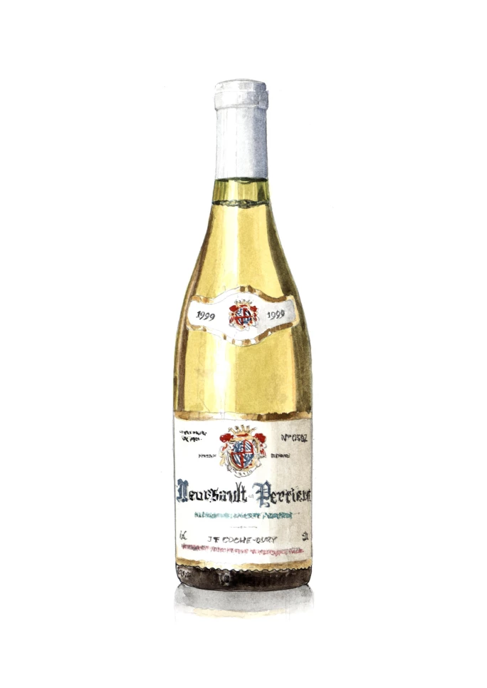
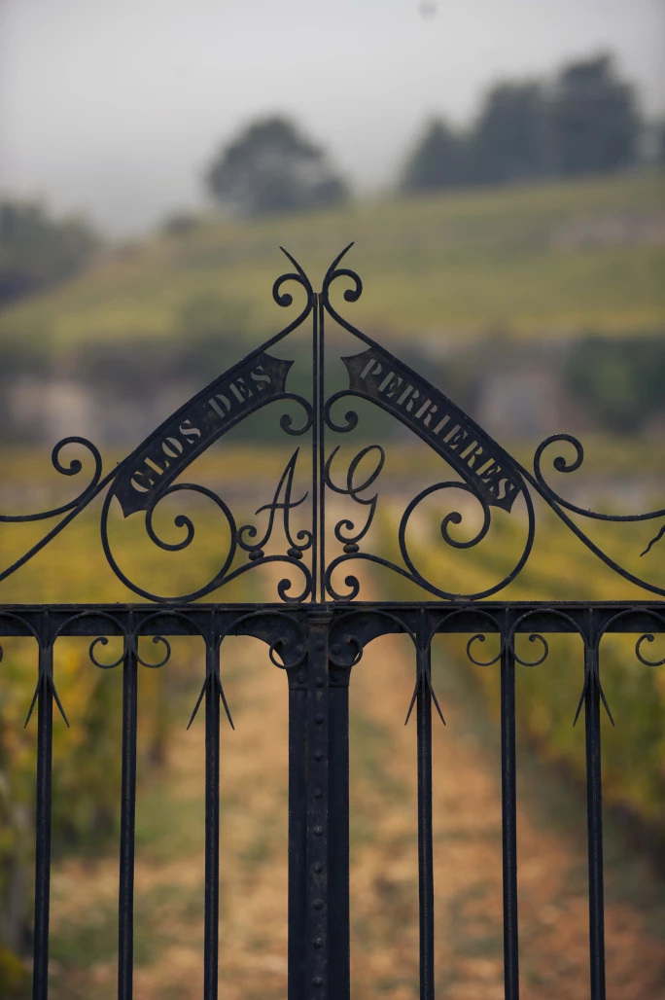
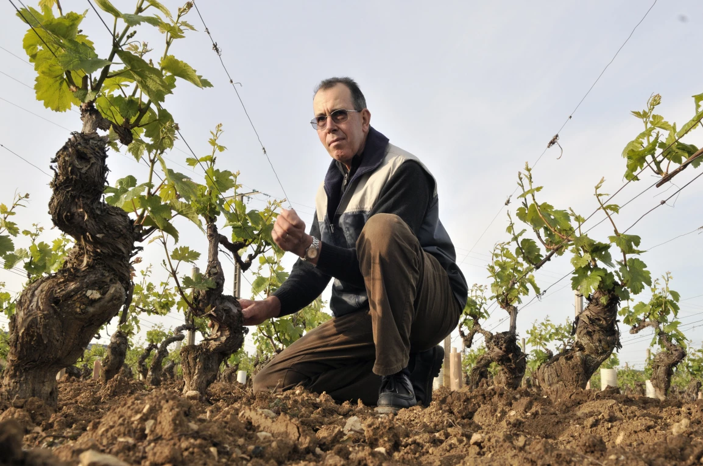
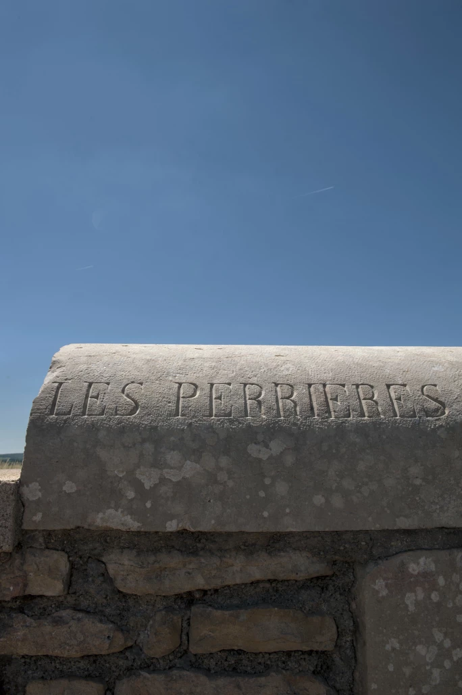

譯自 Jasper Morris · Sotheby's Hong Kong · 2023年10月26日
陳泰銘臻極酒藏的珍酩精選
地區：布艮地伯恩丘區 | 品種：莎當妮
紐約蘇富比將於2024年9月13日欣呈「寰宇百味・名釀珍饈」第四場洋酒拍賣「環球精選」，帶來世界各地重要產區的優質葡萄酒。陳泰銘先生精心蒐集逾四十載的傳奇窖藏，自去年起於蘇富比分為五個專場在全球開拍。本文原刊於是次全球拍賣系列首發之時，繼續閱讀以了解更多陳泰銘先生的窖藏珍釀，並瀏覽寰宇百味・名釀珍饈專頁緊貼拍賣系列的最新消息。
「白葡萄酒放回酒桶度過第二個冬天，於翌年四月逐桶裝瓶」

插畫：Peter Parr、Astor Parr
1930年代，布艮地葡萄酒分級制度面世，當時梅索（Meursault）未有任何地塊被評為特級園。縱然如此，世界各地的布艮地愛好者幾乎會一致同意，倘若梅索有葡萄園獲得特級園的評級，那就非Perrières莫屬；原因是它擁有特級園的特徵—每年表現恆常地優秀，而並不限於出色的年份。這個葡萄園可細分為Aux Perrières、Les Perrières Dessus、Les Perrières Dessous和Clos des Perrières，風土個性豐富多樣。「Pierre」意為石頭，Perrières園一如其名，土壤中的石頭比例甚高。不過，Perrières的名字其實並不是引伸自「小石」，而是指該處前身是採石場，而幾百年前村中的房屋均以石灰岩建造。除此以外，Les Perrières面朝東至東南方，位置無可挑剔，亦成就了卓越的佳釀品質。

Clos des Perrières 的大門，Clos des Perrières 是Perrières 葡萄園多個細分區域之一。相片提供：Jon Wyand
19世紀法國一位葡萄酒專家Lavalle博士撰寫了第一本關於布艮地的書籍，對葡萄園進行分類，認為Perrières是繼Montrachets之後，最好的白葡萄酒產地，並將它歸類為稀有的頂級佳釀。Les Perrières也許本應屬特級園，但作為梅索區首屈一指的一級園的名聲亦不賴。在眾多葡萄園中，只有Charmes和Genevrières或可與之媲美，但Perrières似乎集兩者之長，既帶有Genevrières的礦物味，亦擁有Charmes的圓滿質感，毋疑是梅索區最重要、歷史最悠長的葡萄園。
能在Perrières佔有一席之地，足以令梅索區內不少頂級酒莊感到雀躍自豪，Jean-François Coche-Dury更是當中的幸運兒，因為他在上坡的Les Perrières Dessus和中坡的Aux Perrières合共擁有0.6公頃園地，如按面積計算，Domaine Coche-Dury躋身前10名酒莊之列。當然，就品質而言酒莊本身亦名列前茅，而且其好評並非得益自前人的饋贈，而是有賴Jean-François本人的非凡造詣。他在1970年代末接手了這間不起眼的小酒莊，在那個年代，享譽世界的獨立酒莊為數寥寥。

Jean-François Coche 在春天檢查其位於梅索區的葡萄園。相片提供：Jon Wyand
究竟Domaine Coche-Dury如何一路走來，成為如今世上首屈一指的布艮地白葡萄酒酒莊？相信大家都希望一窺堂奧，了解這些葡萄酒為何如此出色。Domaine Coche-Dury並非唯一產量稀少的酒莊，而葡萄酒在地窖陳釀時的發酵或培養過程亦無任何魔法。事實上，我認為原因並非酒莊有任何特別技藝，純粹是因為Jean-François Coche-Dury擅長園藝，或者更貼切地說，擅於種植葡萄。
Domaine Coche-Dury以傳統方式栽種葡萄。如果聽到有人表示酒莊站在業界潮流尖端，Jean-François定必會一臉震驚。他們的葡萄既不是以有機方式栽種，亦沒有採用生物動力法，而且葡萄酒中含有必需的硫磺。酒莊的成功之道，在於Jean-François和Raphaël Coche 兩父子在葡萄園裡和酒窖中一絲不苟的工作態度。
葡萄在壓榨前會先以舊式液壓Vaslin壓榨機徹底壓碎，此乃Coche-Dury風格的一個獨特元素。除了頂級酒款外，葡萄酒在新木材比例不超過25%的木桶中發酵和陳釀。白葡萄酒在7月換桶，特定特釀的木桶會互相混合，然後放回酒桶度過第二個冬天，於翌年4月逐桶裝瓶。

伯恩丘區 Les Perrières 特級園的典型布艮地雕刻門柱。相片提供：Jon Wyand
雖然我近日未有機會品嚐到Coche-Dury 1999年的Meursault Perrières，不過Meursault和Corton-Charlemagne都令人驚嘆。2023年初，我有幸盲品2011年Meursault Perrières，發現它非常可口。我在網站上寫道：「一聞香，就像走進了葡萄酒天堂，酒香撲鼻，當中夾著適當的燧石味，這股氣息較像金屬氣味，而非燃燒過的火柴味。令人難忘的第一印象之下，還埋藏非常濃郁的果味。在這個不算突出的年份裡能有如此精彩的表現，可見酒莊韌力非凡。即使停留在酒杯裡一段時間，風味仍然毫不褪色。毋庸置疑，它是當晚的最佳白酒，能品嚐它是一種榮幸。」
有2011年份的珠玉在前，不難想像1999年會更加精彩絕倫。這個年份的質、量俱佳，令人讚歎。9月的天氣幾乎無可挑剔，採收工作在9月中開始，符合布艮地的傳統季節。種植者密切留意葡萄成熟情況，時機一至立即開始採收，尤其是在伯恩丘（Côte de Beaune），提早而均勻的開花期往往會提早帶來均勻的收成。就白葡萄酒而言，1999年是極出色的年份，將產量控制得比同行更嚴謹的酒莊，在這一年出產的葡萄酒皆風味絕佳，極具陳年能力。
讓我總結一下為何這瓶佳釀為何令人讚歎不已：梅索是布艮地三大白葡萄酒村莊之一，這瓶酒的葡萄來自區內頂級地塊Perrières，而且是由才華橫溢、無出其右的Jean-François Coche-Dury釀製，再加上1999年這個可遇不可求的年份，真正結合了天時、地利、人和；我有幸品嚐到已陳年近四分一世紀的它，可謂三生有幸。